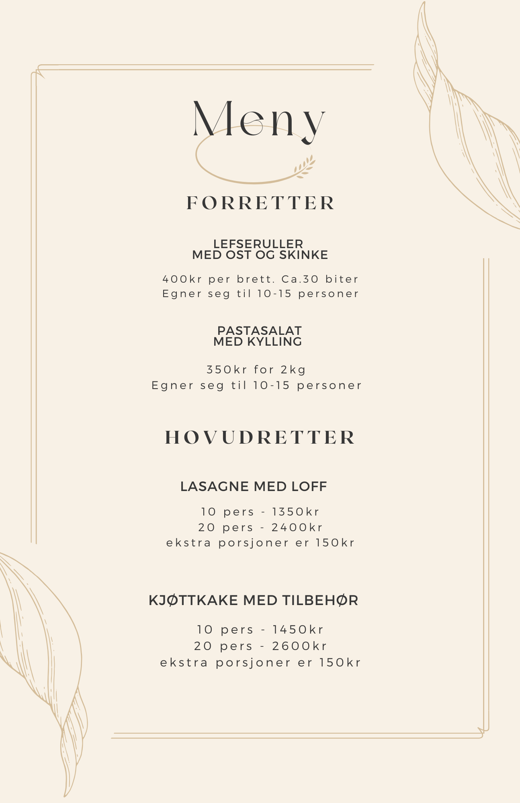

|

|
FORETTER
Lefseruller med ost og skinke
Små lefseruller fylt med kremet ost og smakfull skinke – en perfekt start på måltidet!
Pastasalat med kylling
En frisk og smakfull pastasalat med saftig kylling, grønnsaker og en lett dressing – lett og deilig for enhver anledning.
HOVUDRETTER
Lasagne med loff
Vår klassiske lasagne, laget med ferske ingredienser og servert med nybakt loff – en trygg vinner!
Kjøttkake med tilbehør
Hjemmelagde kjøttkaker i brun saus, servert med poteter og tyttebær – en ekte norsk favoritt!
|